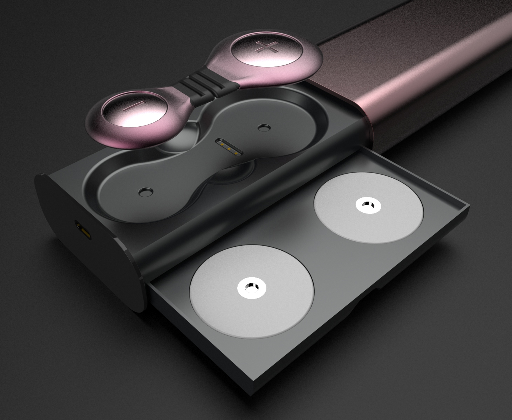
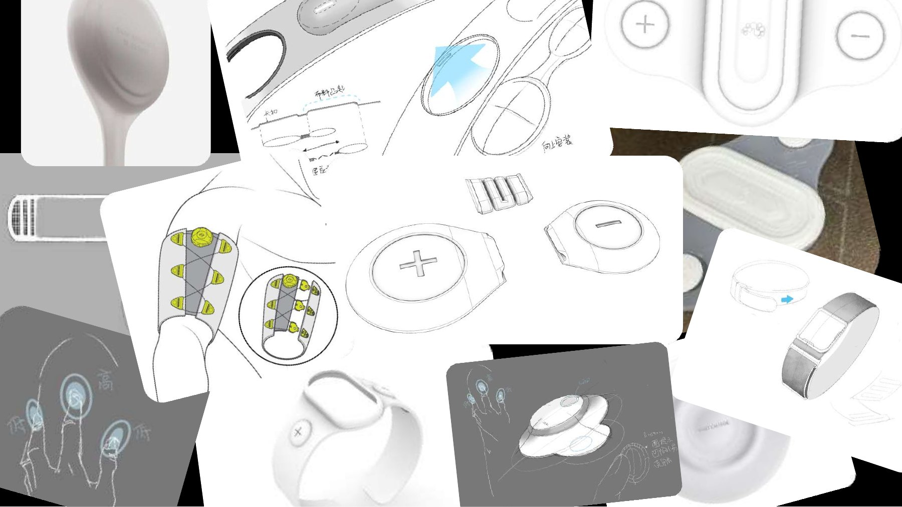
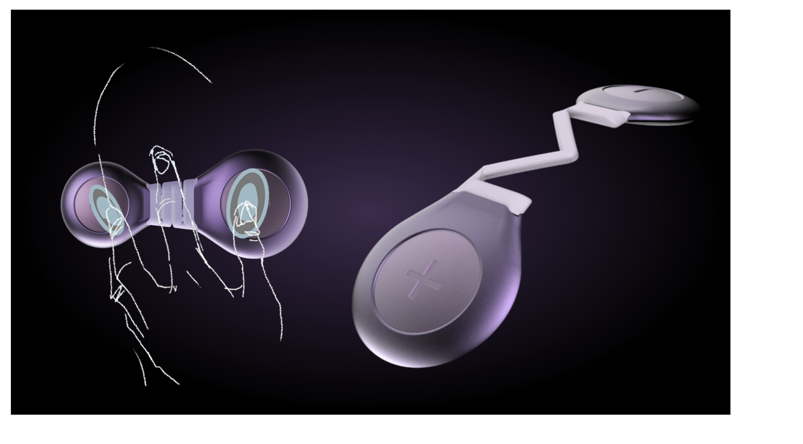
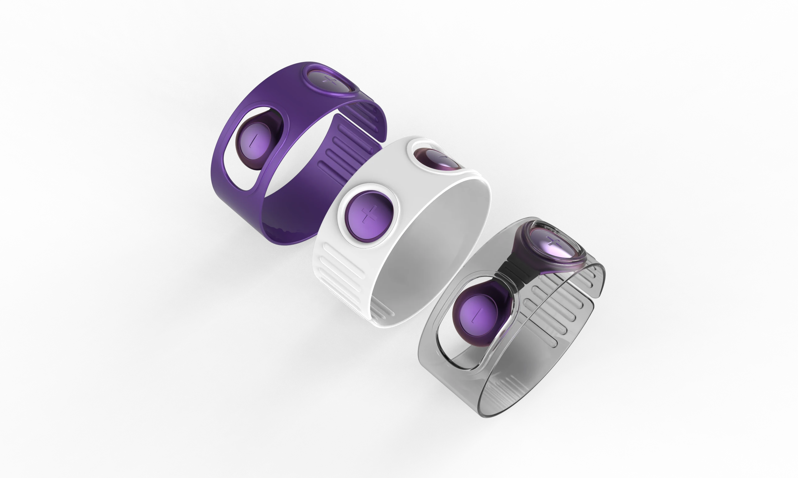
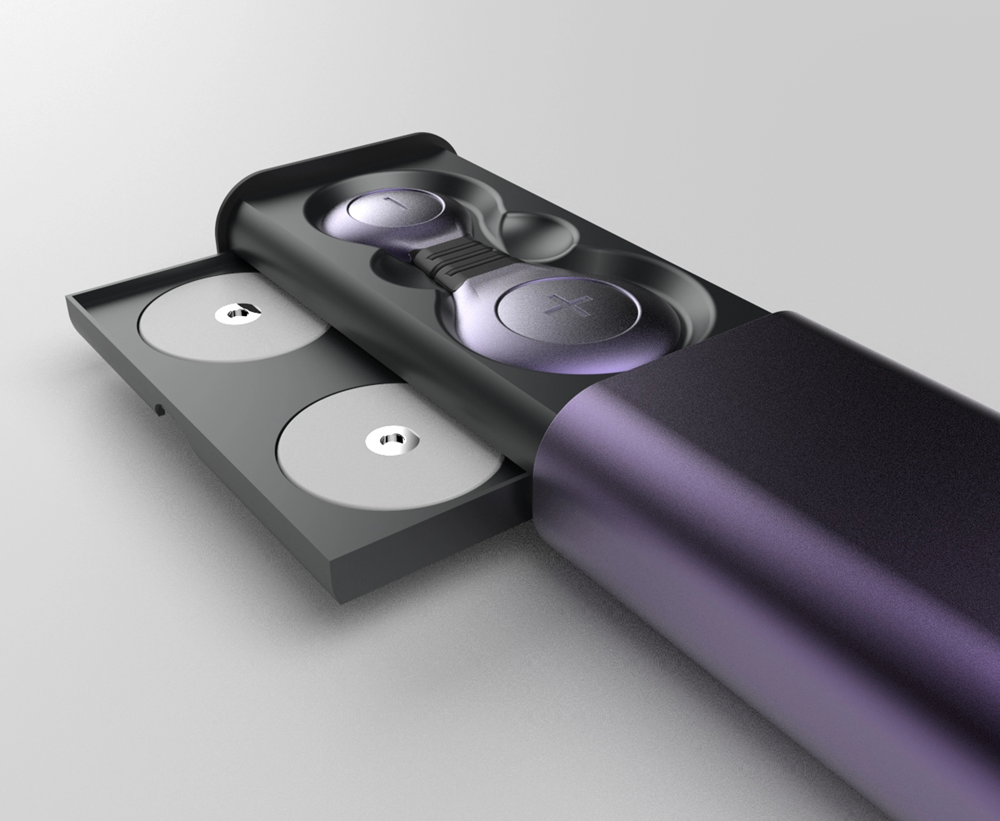

尺寸与贴合
固定形态难以适配不同臂围；佩戴是否稳固，直接影响日常使用的自由度。
MIGRAINE INTERVENTION DEVICE
LIGHTBRAIN / 2025
从佩戴与调节的触感，到一次点击开启的数字体验，重新梳理一款偏头痛干预设备与配套 App 的使用旅程。
进入项目
项目基于既有偏头痛干预设备展开优化。我们关注的不只是设备能否工作，更是人在头痛、视线模糊或外出途中，能否自然地佩戴、操作与理解反馈。
固定形态难以适配不同臂围；佩戴是否稳固，直接影响日常使用的自由度。
传统凝胶贴片在移动时易脱落，设备的使用容易被固定在静态场景。
过程缺少直观的实时反馈，用户难以理解进度，也较难建立持续使用的信心。
如何让一项偏头痛干预方案，同时减轻身体负担与使用负担？
面对紧凑的电路板、供电与电极间距，设计需要在工程约束里寻找舒适的形态。团队从草图推演到三维建模与原型验证，逐步形成可调节的连接结构、单手易辨识的操作方式，以及更像日常配饰的外观。


以“抓握”的直觉动作作为出发点，放大加减按键的触觉辨识度，让疼痛时的调节更容易完成。

可选的佩戴结构帮助设备在通勤与轻活动中保持稳定；不同材质与配色减轻医疗器械的距离感。

设备与备用配件采用集中收纳方式，让取用、携带与归位成为连贯的日常动作。
配套 App 以低认知负担的流程连接设备：快速开始、过程引导、状态记录与恢复趋势。它把设备的技术语言翻译成用户能够理解的节奏与反馈。
将启动入口放在界面中心，减少疼痛时的寻找与判断。
通过脉冲可视化与呼吸节奏，给漫长的干预过程一个平静的时间感。
以更轻松的表达替代冰冷量表，降低完成后反馈的心理负担。
将头痛日记与使用记录可视化，帮助用户回看自己的变化。
THE FULL EXPERIENCE · LIGHTBRAIN
把形态、佩戴与界面放回同一条体验线索，观看轻脑项目影片。
我的角色
参与硬件的外观与结构迭代、原型实现，以及部分 App 界面与交互逻辑设计。
设计收获
从皮肤接触的佩戴感、手指触及的按键，到屏幕上的反馈，产品的每个触点都应传递一致的“轻松与关怀”。
课程与产学合作项目 · 设备及 App 概念设计